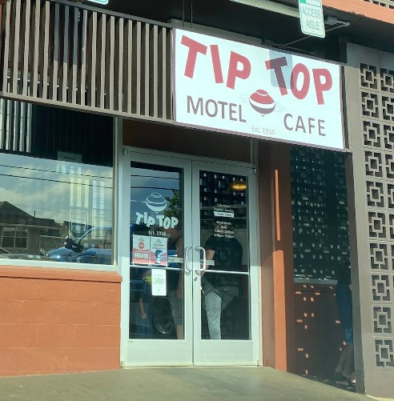

Tip Top Motel, Cafe, & Bakery
Place: Tip Top Motel, Cafe, & Bakery, Līhuʻe, Kauaʻi
Type: Historic café / bakery / motel / family-owned business
Namesake: The Tip Top Building, constructed in Līhuʻe in 1915, where Denjiro Ota opened his café the following year
Story it tells: How a Japanese immigrant's small plantation-era coffee shop grew into a multigenerational Kauaʻi institution, preserving the name of its original building more than a century later.

Tip Top Cafe opened in Līhuʻe in November 1916, founded by Denjiro Ota, a Japanese immigrant from Hiroshima who had worked as a cook for plantation manager Albert Spencer Wilcox. Recognizing Ota's culinary talents, the manager of Lihue Store encouraged him to open a coffee shop nearby. Ota established his business in the Tip Top Building, a commercial structure constructed in 1915, and adopted the building's name for his café. The phrase tip-top, meaning excellent or first-rate, proved a fitting name for a business that would become a Kauaʻi institution.
The café initially catered to Līhuʻe's plantation community, opening as early as 4:00 a.m. to serve breakfast and coffee to workers beginning their day. Drawing upon his experience cooking for the Wilcox family, Ota developed a menu of hearty, affordable meals alongside freshly baked breads and pastries. Over the decades, Tip Top became a familiar gathering place in Līhuʻe, building a loyal following among locals.
In 1965, the business underwent its largest transformation. With its original building facing demolition as part of the development of the Līhuʻe Civic Center, Denjiro's son Mitchell Ota relocated Tip Top approximately half a mile away to Akahi Street. Mitchell was a bit of a visionary and saw an opportunity to diversify the business into the growing tourism space. He developed the site into a combined restaurant, bakery, and 34-room motel.
Tip Top became especially known for its local comfort food, including oxtail soup, banana macadamia nut pancakes, loco moco, and saimin. Its bakery produced malasadas, cream puffs, éclairs, and cookies, while the café retained the neighborhood diner of a past era. Even the mismatched collection of branded coffee mugs, accumulated over the years, became part of the restaurant's distinctive character.
In September 1992, Hurricane ʻIniki devastated Kauaʻi and severely damaged the Tip Top property, tearing the roof from the motel. The Ota family, like many, had to rebuild and after extensive repairs, the café reopened in December 1992, continuing a tradition that had already endured for more than seventy-five years.
Today, Tip Top Motel, Cafe, & Bakery remains a family-operated Līhuʻe landmark, sustained through four generations of the Ota family. Although the original Tip Top Building disappeared decades ago, its name lives on at the Akahi Street location. What began as a small coffee shop serving a plantation town has become one of Kauaʻi's enduring family businesses, preserving both the flavors and the everyday history of old Līhuʻe.